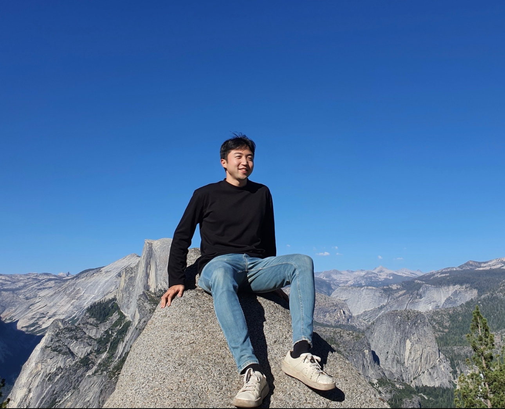

Taewon Park
PhD Candidate in Electrical Engineering
Stanford University
About Me
I am a PhD Candidate in the Safavi-Naeini Group at Stanford University. My research lies at the intersection of integrated photonics, quantum optics, and nonlinear optics.
I focus on developing high-performance photonic integrated circuits (PICs) using thin-film lithium niobate (TFLN). My work aims to create scalable quantum and optical systems for squeezed light generation and quantum sensing.
Research Interests
- Integrated Photonics
- Quantum Optics & Sensing
- Nonlinear Optics
Recent News
Sep 2025
Paper "Low-power integrated optical parametric amplification via second-harmonic resonance" accepted in Nature.
Aug 2025
Won Best Poster Award (Runner-up) at the DARPA INSPIRED program PI meeting.
Mar 2024
Paper "Single-mode squeezed-light generation..." published in Science Advances.